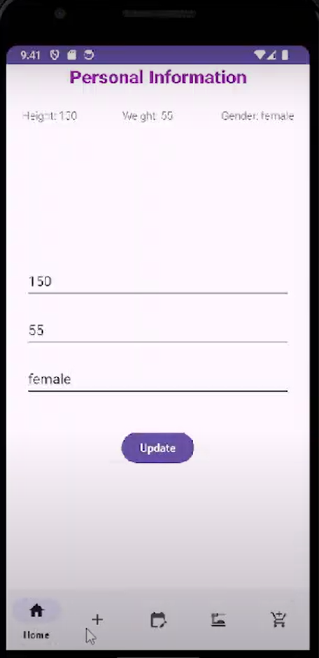
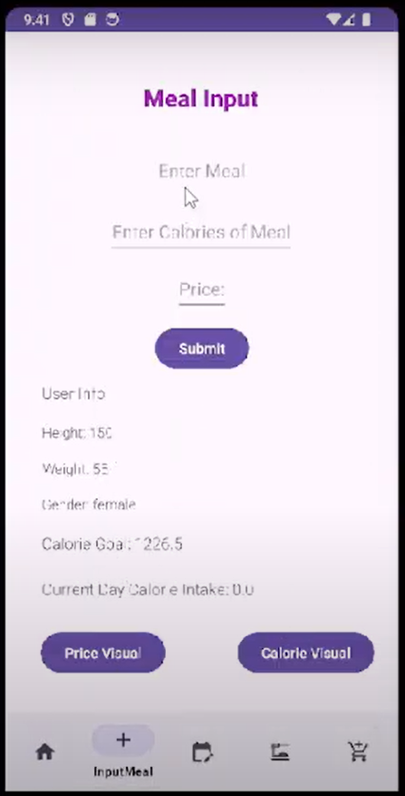
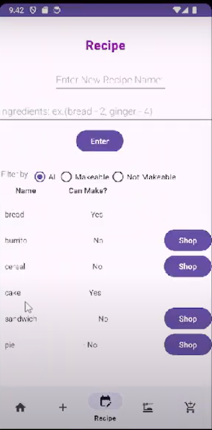
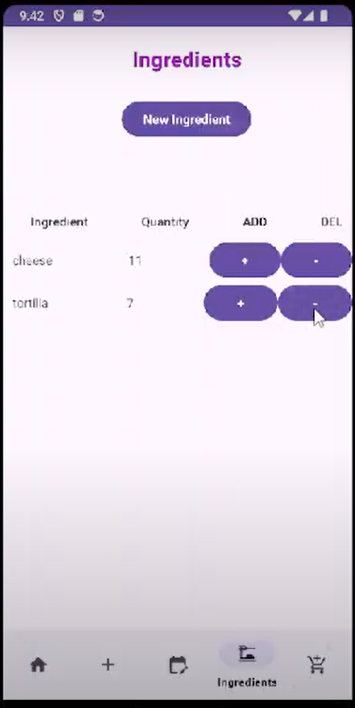
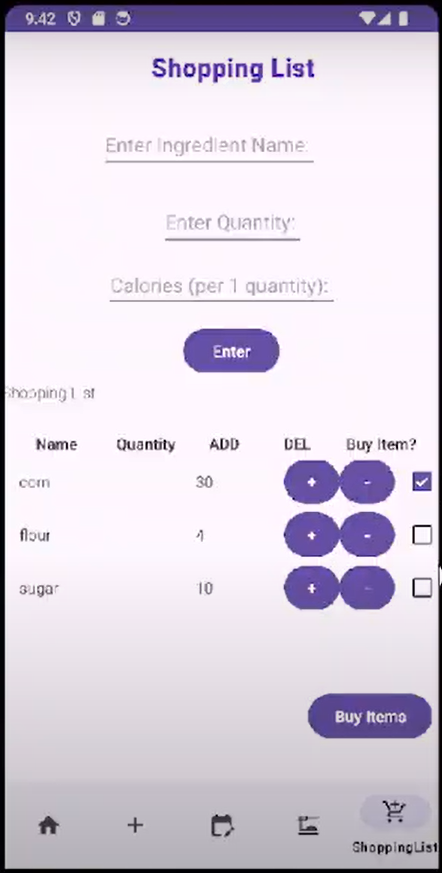

The user has the option to either create an account or to log in to an exisiting account
The user is able to create an account and the details will be saved in a database
The user can log in to their existing account, this information is stored in the database
The user can customize their profile by changing their height, weight and gender
The user is able to input a meal, with the number of calories and the price. This will update their current day calorie intake. Additionally, (as shown in the video below), the user can get a price or calorie visual to see their food consumption and money spending.
The user is able to enter a recipe name and its ingredients. The app will determine whether the user is able to make it based on the items in the users pantry. If it is not makeable the user will be able to shop for the missing ingredients, but if it is makeable the user can click on the recipe name to obtain the ingredients as well as "cook" the recipe and it will be added as a meal into the daily calorie intake.
The user is able to enter an ingredient name, along with the quantity, calories and expiry (optional) and track their ingredients. This is the pantry that will determine whether recipes are makeable or not makeable.
The user is able to shop for ingredients by entering the name, quantity and calories that will then be updated in the pantry/ingredients.